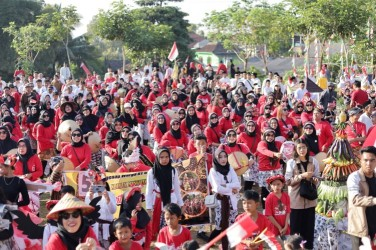

Meriah, Kirab Sedekah Bumi dan Pitulasan di Dusun Lerep

UNGARAN - Kirab Budaya Dusun Lerep, Desa Lerep, Ungaran Barat, berlangsung sangat meriah, Minggu (18/8/2024). Setidak-tidaknya dua ribu warga mulai anak-anak, remaja putra-putri hingga orang tua, memeriahkan karnaval yang dikemas dalam Kirab Sedekah Bumi dan Karnaval Kemerdekaan itu. Ribuan peserta kirab mengambil start di lapangan Ruang Terbuka Hijau (RTH) Lerep…